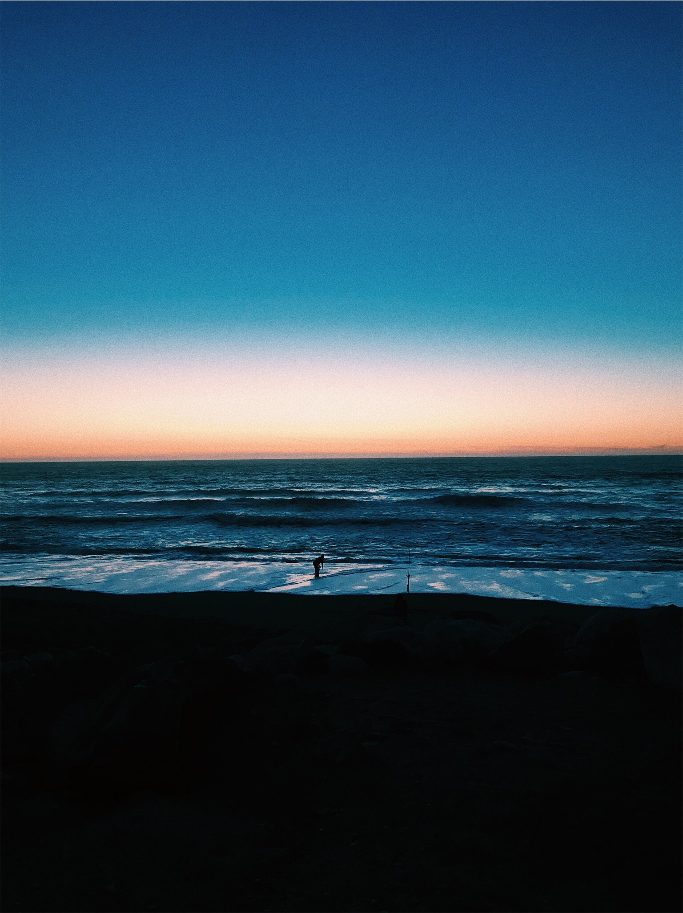
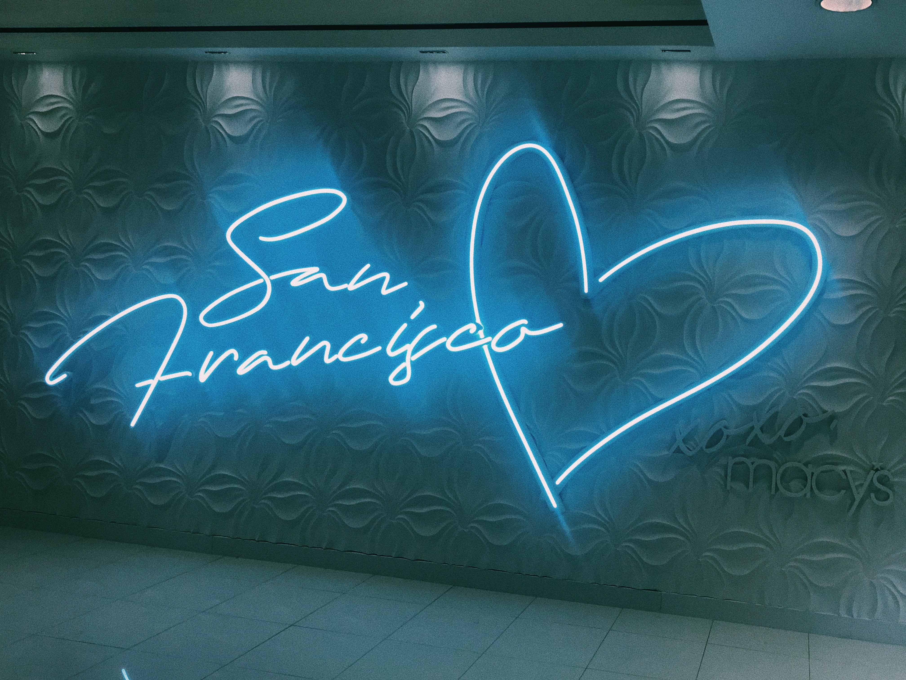
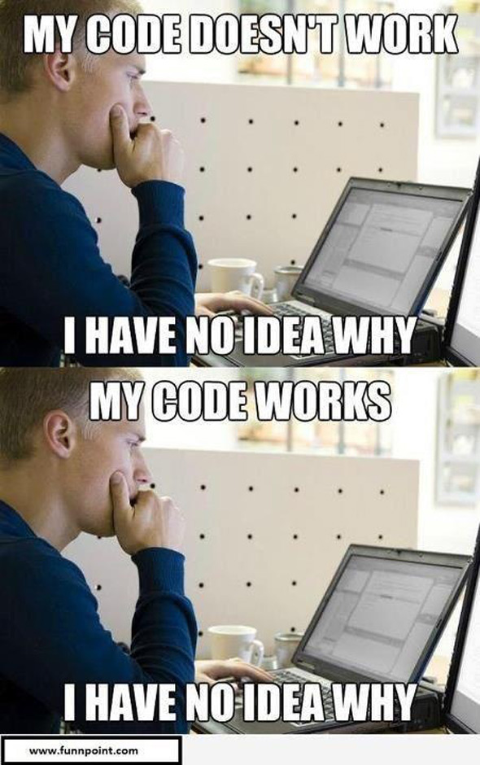
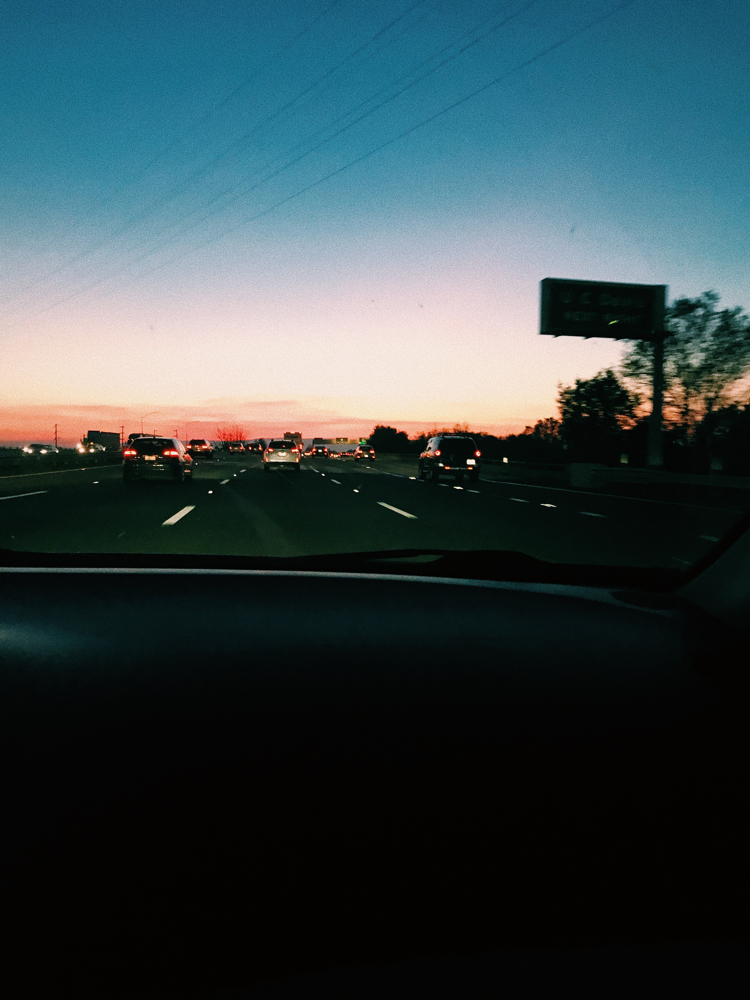

Blog #1
Thursday, February 14th

First Day of Class!
Today, I am attending my first Web Design Class. I have never taken a class like this before. I look forward to expanding my knowledge on coding.I wonder what my website is going to look like in the final product.We are ending class in 10 minutes and will need to submit our final product to our Professor Lisa Rose. It has been a very informative class session because I learned so much. I can not wait for the next class to practice and develop more skills! Until next time!
Blog #2
Thursday, February 21st
For today's class, we are reviewing the work we did from our last class session. Also, we are practicing our old skills and finding new ones to work on for this class.I plan on adding a photo to my Blog today, along with possibly trying something else with images or videos!I ran into an issue with exporting my file online; however, it was not a coding issue. The issue was rooted in my computer.Until next time!
Blog #3
Thursday, February 28th
For today's class, we are focusing on moving our style tags to a new CSS file and creating a format on our blogs. By the end of the class period, our professor wants us to be able to create a seperate CSS file and HTML file. For our next homework assigment, Lisa Rose wants us to make a seperate CSS file, add a link, picture, and make as many comments as possible.
Blog #4
Thursday, March 7th
For today's class, we are focusing on answering everybody's clarifying questions and looking at more websites. I chose the image above because as I continue to work and practice my skills with HTML and CSS, I will take and add things purposefully or accdiently and sometimes it works and other times it does not. These past couple of classes have been challenging and when I was working on my website last night, I ran into a few problems with my website. However, I find that using the websites and watching youtube videos helps alot with the process and answering most of my questions.I hope my final blog website and my final version of my website looks the way I envision it! Until next time!
Blog #5
Thursday, March 14th
For today's class, we looked at different websites for our final project to get some inspiration for the design and the coding used on the website. We mainly focused on the design on the websites and I found that to help because I had some inspiration for my project design. This week, Bibiana helped me add another blog by looking at her card tags on her code. I found working with partners to be very helpful and informative when trying to find some inspiration and for coding help. Until next time!
Blog #6
Thursday, March 21st
For today's class, we looked over creative spaces with Professor Rose and was able to find more inspiration and see more ideas. Along with this, we looked over and played around with Adobe Dreamweaver. I really like playing with and using Adobe Dreamweaver because it directly shows me the changes that I make to my code as soon as it changes and how it looks on the website template. For today's class, Bibiana helped me during class by helping me with trying to figure out how to use Adobe Dreamweaver. Until next time!
reasons for website choice
"Look Book 14/15": I chose this website because the website is clean and simple. It is displaying its merchandise elegantly and it seems as though each show shares a story.
"The Boat": I chose this website because it is sharing a story throuh an interactive website. Although this website is "busier", in comparison to the "Look Book 14/15", the story is easy to follow due to the animation, font used, etc.
helpful websites
about me!
year: sophomore
major: psychology: child/human development
minor: spanish
hometown: south san francisco
email: ing1@stmarys-ca.edu